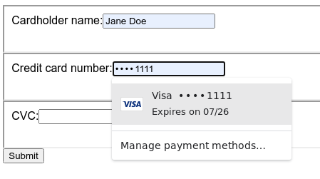
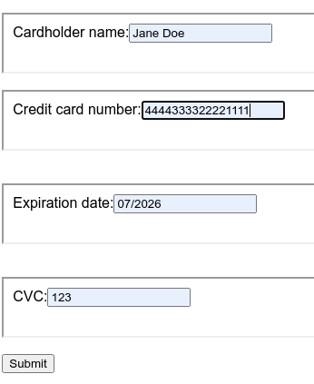
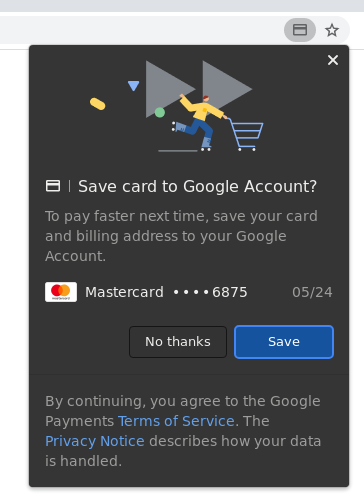

Instructions
Test 1
Not applicable for WebView (which apparently has no refill logic).
- Focus the "credit card number" field.
- A credit card suggestion appears. 
- Select the suggested credit card.
- The "expiration date field has been added and all fields (including the expiration date field) are filled. 
Test 2
- Manually fill the form.
- Press the submit button.
- Import popup occurs. 
- Go to
chrome://settings/clearBrowserData and clear the last hour of browsing data and close the tab.